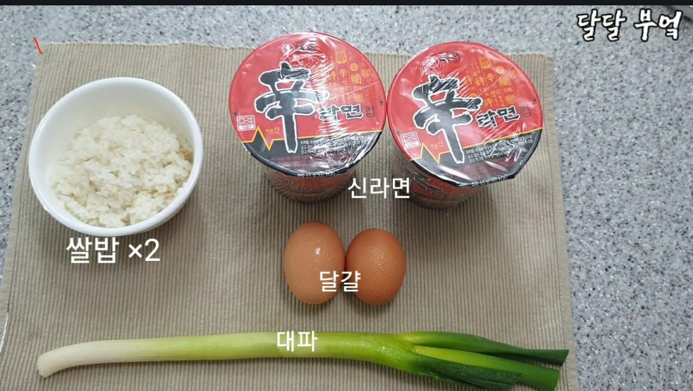
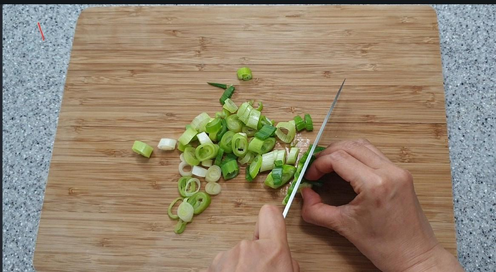
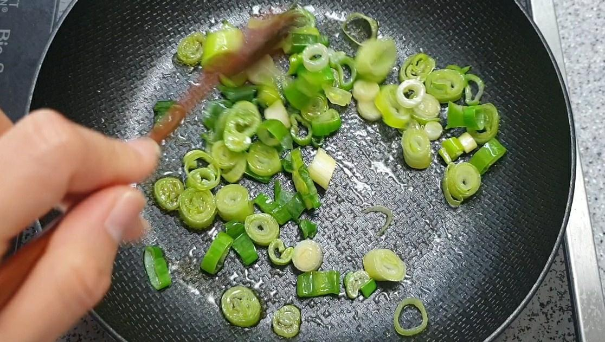
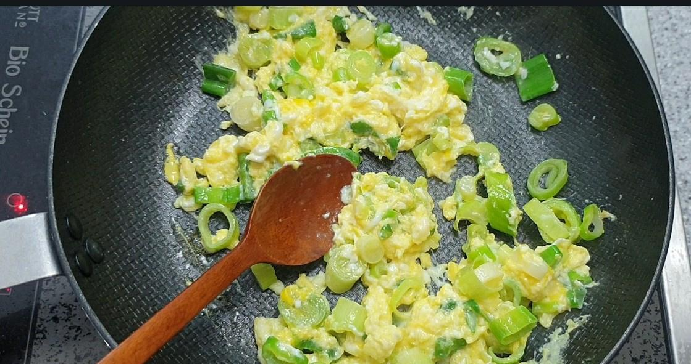
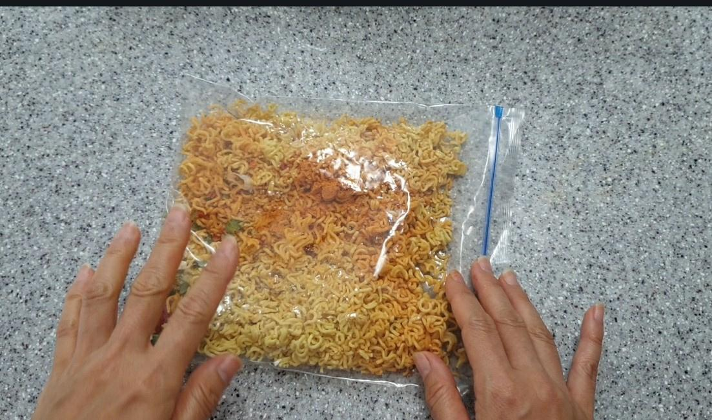
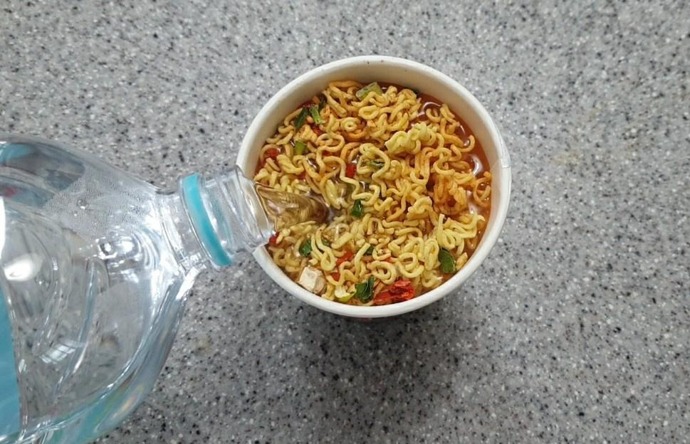
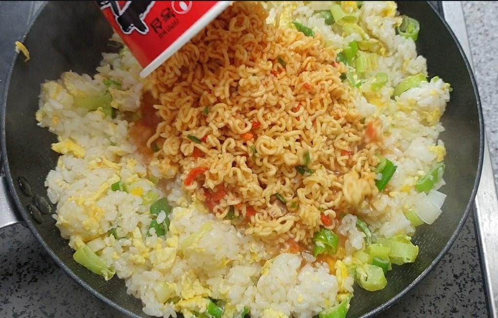
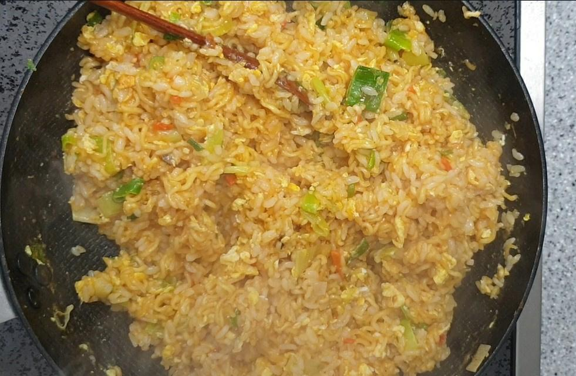
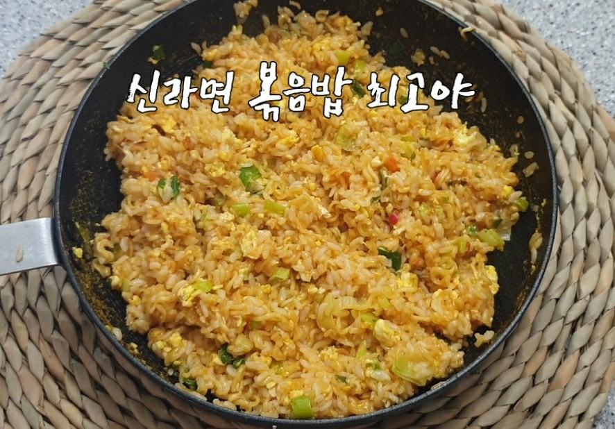

RECIPE TIP
짜장범벅, 스넥면, 삼양라면 등등
자기가 좋아하는 라면으로 대체 가능~!

STEP.1
재료 : 신라면, 계란, 대파, 흰밥
"신라면 소스"는 조절해서 넣으세요

STEP.2
대파를 얇게 썰어줍니다

TEP.3
식용유 적당히 넣고 적당히 볶아줍니다

STEP.4
볶아진 대파에 계란을 넣고 볶아줍니다

STEP.5
신라면을 봉지에 넣고 잘게 부셔주세요

STEP.6
신라면 통안에 부셔놓은 라면을 다붓고
물을 컵속에 가득채워주세요

STEP.7
볶아놓은 계란위에 부셔놓은 라면을 다부어주세요

STEP.8
물이 없어질때까지 중불에서 달달볶아주세요

STEP.9
고슬보슬 맛있는 신라면볶음밥 완성